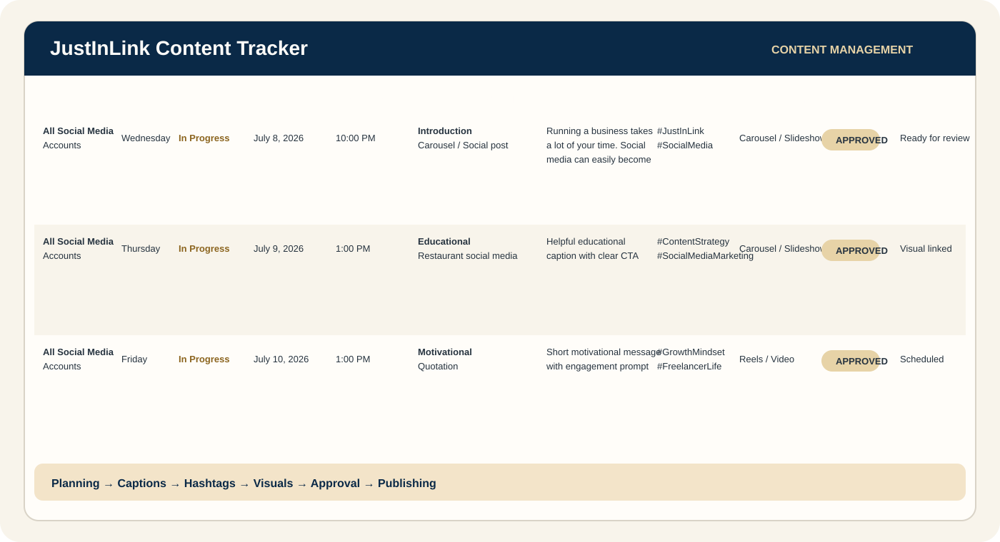

Administrative Support
Document preparation, file organization, scanning, compiling, basic Microsoft Office tasks, and day-to-day admin assistance.
FilesDocumentsOrganization
VIRTUAL ASSISTANT • PHILIPPINES
Administrative Support • Social Media • Email Marketing
Hi, I'm Justine Brian Larracas — a trained Virtual Assistant who can help you stay organized, keep your content moving, and take recurring tasks off your plate.

01 • ABOUT JUSTINLINK
I’m a trained Virtual Assistant focused on practical business support — the everyday tasks that need consistency, organization, and attention to detail.
My VA Bar training gave me hands-on practice in administrative support, data management, social media management, content creation, email marketing, lead generation, and digital tools for VA work.
I also have experience with typing, scanning, compiling files, printing, data entry, and document handling from my previous work in a printing shop.
02 • HOW I CAN HELP
Choose the tasks you need help with. I can support repeatable workflows while you focus on clients, sales, and growth.
Document preparation, file organization, scanning, compiling, basic Microsoft Office tasks, and day-to-day admin assistance.
Data encoding, copy & paste, spreadsheet organization, online research, and keeping information accurate and easy to manage.
Content planning, captions, carousels, single-image posts, visual organization, and support for consistent social media activity.
Mailchimp landing pages, sign-up forms, basic lead-capture journeys, and content support for email marketing campaigns.
Lead research, organized prospect information, list building, and basic support for keeping potential leads easier to follow up.
03 • SELECTED WORK
Training projects and portfolio samples that show how I approach content, organization, and digital support.
Sample social media work including carousel content and single-image posts. These pieces demonstrate visual consistency, educational content, and promotional messaging.


Two sample posts showing how I can turn a business idea into clean, client-ready social media content.


Sample project from my VA Bar training. The tracker organizes channels, dates, times, topics, captions, hashtags, visual types, links, status, and comments in one workflow.

Sample email-management workflow showing how I would separate messages by priority and next action instead of leaving everything in one crowded inbox.
I practiced building a simple lead-capture journey in Mailchimp: a landing page introduces the offer, then a sign-up form captures the interested visitor.
04 • TRAINING & CERTIFICATION
The VA Bar training gave me practical exposure to the workflows I want to support for future clients.

Completed the five preferred freelancing courses in the Intermediate Training Course Program: Social Media Management, Lead Generation, Graphic Design, Email Marketing, and Administrative Course.
05 • HOW I WORK
A straightforward workflow helps make remote support easier for both of us.
We clarify your business, priorities, preferred tools, and the tasks you want off your plate.
I turn the request into clear tasks, priorities, deadlines, and a manageable workflow.
I work through the assigned tasks carefully and keep information organized as I go.
You receive clear updates so you know what is done, what is next, and where I need input.
06 • TOOLS & SKILLS
Tools I have trained with or used in my workflow practice.
07 • WHAT YOU CAN EXPECT
I keep tasks and updates easy to understand so nothing important gets lost.
I review details and keep information organized before considering a task complete.
I am willing to learn your preferred tools, processes, and way of working.
Your business information, files, and client details deserve responsible handling.
08 • LET'S WORK TOGETHER
Let's talk about the support you need and see where JustInLink can make your workload lighter.